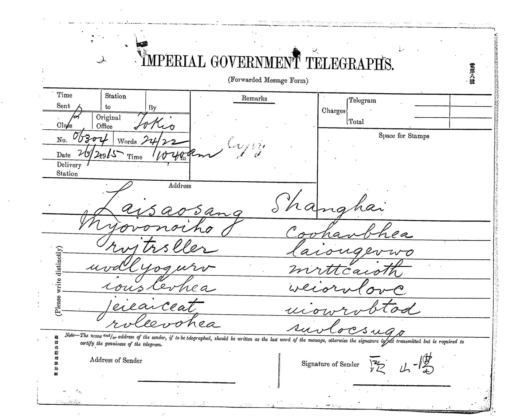
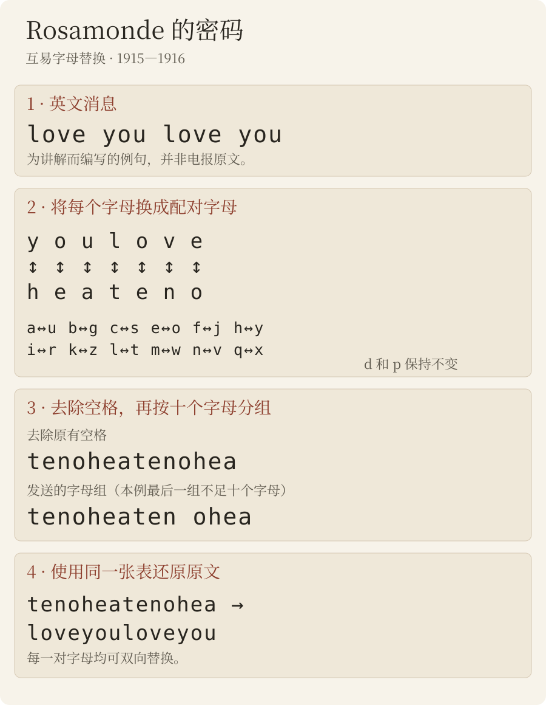
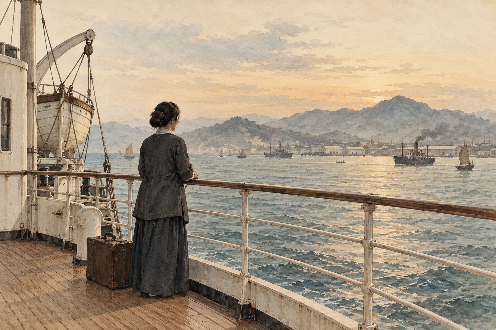

新发现
罗莎蒙德电报
1915和1916年，日本当局抄录了二十二封由无意义单词组成的电报——heaitolloi、coohavbhea、tenocrszqu——收件人是在上海或东京的“Rosamonde”（罗莎蒙德）。这些电报一直躺在档案里，没有译文。它们其实是英文，用简单的字母替换加密。就我们所知，这是孙中山与宋庆龄（“Rosamonde”）之间直接往来、现存最早的信息，比两人结婚早八个月。

档案
1913至1917年间，日本递信省通信局为外务省系统地抄录了流亡东京的孙中山身边人员收发的电报。这些抄件构成「特定人ノ発受郵便物取調」系列，藏于外务省外交史料馆，并由日本亚洲历史资料中心（JACAR）数字化。
1915年的两卷（JACAR B03050087600 与 B03050087700）中，除汉字电码电报外，还有另一类电报：十个字母一组的单词，辅音和元音毫无规律地交错，某些字母组反复出现（hea、lyu、ound）。它们以頭山滿（头山满，孙中山的邻居和庇护者）的名义从东京发往上海的两个地址——“Laisaosang, 445 Chaoufoong Road”与“Rosamonde, 628 E. Yuhang Road”；1916年则往来于上海与“Rosamonde Tokio”之间。抄件均无译文。

加密系统：英文，逐字母替换
明文是电报体英文，去掉空格，再切成十个字母一组。每个字母换成它在一张互换对照表中的搭档：加密和解密用的是同一张表。
a↔u b↔g c↔s e↔o f↔j h↔y i↔r k↔z l↔t m↔w n↔v q↔x — d、p 不变
上表是基本替换。1915年电报纸亦见以q代替p所预期密文字母的用法，例如3月6日复核的qq，英文读本标作[pp]。此用法另行记录，不暗中改动互换表。
因此 you 写作 hea，love 写作 teno——1915年3月几封发给 Rosamonde 的明文电报，落款就是“teno”。人名、数字和回电地址保留明文（“Inuzuka”、“100000”）。

1915年2月至7月
按原文照录，包括电报缩写（ye 即 you，Yoko 即横滨）；方括号内为更正（抄写混淆）或补出的字母；“……”为未读出的部分。2月21日那封中，单词 happy 未加密，夹在密文中间。中文为我们的译文。
| 日期 | 发 → 收 | 解读文本 |
|---|---|---|
| 17/2/1915 | 东京 → Laisaosang 孙中山 → 宋庆龄 | Your letter [o]f the eight received. My life is [s]afe agai[n], I [ha]ve to thank you. Did you get my l[a]st cable?收到你8日的信。我的生命又安全了，我要感谢你。你收到我上一封电报了吗？ |
| 20/2/1915 | 东京 → Rosamonde, 628 E. Yuhang Road（署名“Hata”） 孙中山 → 宋庆龄 | Must an[s]wer cable to Chu's yesterday. HATA须回复昨天发到朱处的电报。 |
| 21/2/1915 | 东京 → Laisaosang 孙中山 → 宋庆龄 | I am so happy, tha[n]k[s] to you.我太幸福了，多亏了你。 |
| 23/2/1915 | 东京 → Laisaosang 孙中山 → 宋庆龄 | Yes, I'll save you or die myself if fail. But you must b[e] strong too.是的，我会救你；若失败，我宁可自己死去。但你也必须坚强。 |
| 25/2/1915 | 东京 → Laisaosang 孙中山 → 宋庆龄 | With de[vou]t love I ask ye to throw of[f] Yung at once. If not I will surely die. I could throw of[f] … and sacrificed 100000 yu[a]n for you. Why are you [t]roubl[e] over a house a[n]d automobile? Now the [q]ues is: are you go[i]ng to cut h[i]m?怀着虔诚的爱，我请你立刻摆脱 Yung。否则我必死无疑。我能摆脱……，并为你牺牲十万元。你为何为一栋房子和一辆汽车烦恼？现在的问题是：你会和他断绝吗？Yung：宋庆龄的一位求婚者，可能是她父亲中意的人选；其中文姓名不详（见下文）。 |
| 26/2/1915 | 东京 → Laisaosang 孙中山 → 宋庆龄 | Whenever ye see Yung you inflict tor[t]ure [u]pon me, and the [p]ain will surely react on you more i[n]tens[e], for our souls are mingled i[n]to one. You can't esca[p]e.每当你见 Yung，就让我受尽折磨，而这痛苦必将更强烈地落回你身上，因为我们的灵魂已融为一体。你逃不掉的。 |
| 3/3/1915 | 东京 → Laisaosang 孙中山 → 宋庆龄 | Thirst[y] for hearing from you. An[s]wer.渴望你的消息。回复。 |
| 1915年3月6日 | 東京 → Laisaosang 孙中山 → 宋庆龄 | I a[pp]rehend you going to desert me. Is it true? Tell definitely once for all to me. I shall a[pp]reciate you more for the honesty.我担心你要离弃我。是真的吗？请一次说清楚。你若坦白，我会更敬重你。 |
| 1915年3月7日 | 東京 → Laisaosang 孙中山 → 宋庆龄 | Why not give me comforts?为何不给我安慰？ |
| 9/3/1915 | 东京 → Laisaosang（30字） 孙中山 → 宋庆龄 | [J]oy and ho[p]e return to me with your cable yes[ter]day. Many tha[n]k[s]. I just goin[g] … I a[m] well and sound usual. E[x]ecu[t]e your agreement at once, I b[i]d you [e]agerly. Your father su[r]prised me by a cal[l] t[h]is morni[ng].（中间一段未能读出）你昨天的电报让我重拾喜悦和希望。多谢。我正要……我一如往常，身体健康。请立即履行你的约定，我热切地请求你。今早你父亲来访，让我很意外。 |
| 11/3/1915 | 东京 → Laisaosang 孙中山 → 宋庆龄 | What make ye cabled me so urgent yesterday? Re[p]ly by ci[p]her. Must write it at home, never do it in office, for [t]hey see. You don't use code book, so they can get our secrets by guessing. Write me often, [p]lease do.你昨天为何如此紧急地来电？用密码回复。务必在家里写，切勿在办公室写，因为他们会看见。你不用密码本，所以他们能猜出我们的秘密。请常给我写信。 |
| 12/3/1915 | 东京 → Laisaosang 孙中山 → 宋庆龄 | Shall I tell father that you coming by Korea? Answ[er].要告诉你父亲你搭“高丽号”来吗？回复。 |
| 15/3/1915 | 东京 → “Miss Nit”，“高丽号”轮船（无线电） 孙中山 → 宋庆龄 | Who coming with you? Do father know when to meet ye? Are you land Kobe or Yoko? Re[p]ly [q]uick so that I may know what to do for your landing. Love.谁和你同来？你父亲知道何时去接你吗？你在神户还是横滨上岸？速复，好让我安排你上岸的事。爱你。 |
| 10/6/1915 | 东京 → Laisaosang 孙中山 → 宋庆龄 | Are you forgot me? Why not write and se[n]d the [p]hoto?你忘了我吗？为何不写信，也不寄照片来？ |
| 7/7/1915 | 上海 → Rosamonde, Tokio 宋庆龄 → 孙中山 | Lovesick … in torture. Be merciful. Come or free me forever.相思成疾……备受折磨。请发慈悲：要么来，要么永远放我走。 |

1916年5月

1916年4月，孙中山离开日本，到上海领导反袁起义；已成为他妻子的宋庆龄起初留在东京。同一密码随即再次出现（这些电报是在找到密钥之前盲读转录的）：
| 日期 | 发 → 收 | 解读文本 |
|---|---|---|
| 1/5/1916 | 长崎 → Rosamonde, Tokio 孙中山 → 宋庆龄 | [In]te[n]s[e] love a[n]d ma[n]y k[is]ses to you.炽烈的爱，给你许多吻。 |
| 4/5/1916 | 上海 → Rosamonde 孙中山 → 宋庆龄 | Safel[y] la[n]d Fre[n]ch concess[i]on yesterday, no[w] very busy now. Love from devoted husba[nd].昨日在法租界平安登岸，现在非常忙。忠诚的丈夫寄上爱意。 |
| 8/5/1916 | 东京 →「Junzaburo」，上海（电报单署名「中山」） 宋庆龄 → 孙中山（推断） | [I]s [i]t true y[o]u are going to Canton soon?听说你即将去广州，是真的吗？ |
| 10/5/1916 | 上海 → Rosamonde 孙中山 → 宋庆龄 | [I] not go to Canton. You can come here an[y] t[i]me, b[u]t do[n]'[t] take iro[n] trunk, leave [i]t to Mr Inuzuka's care. Do you understand?我不去广州。你随时可以来这里，但不要带那只铁箱，把它交给犬冢先生照管。明白吗？ |
| 11/5/1916 | 上海 → Rosamonde 孙中山 → 宋庆龄 | D[a]rl[ing], have you [r]eceive cable a[sk] [y]ou to come he[r]e a[n]d do you know that iron trunk mus[t] be g[i]ve[n] to M[r] Inuzuka to take care. Love a[n]d k[is]ses to m[y] own w[i]f[e].亲爱的，你收到要你来这里的电报了吗？你知道那只铁箱必须交给犬冢先生照管吗？给我的妻子爱与吻。 |
| 12/5/1916 | 上海 →「Nakayama, 109 Harajuku, Tokio」 孙中山 → 宋庆龄 | Cha[ng] K[i] [r]etur[n] Tok[i]o [i]s not true. D[i]d y[o]u [re]ceive two former ca[bl]es ask you to come back a[n]d g[i]ve the iro[n] tru[n]k [to] M[r] Inuzuka's [c]are? Have y[ou] done so? Fo[r] [I] [a]m very [anxi]ous about the t[r]unk, fo[r] [i]t [i]s ve[ry] d[an]ge[r]ou[s] fo[r] [y]ou to take [i]t yourself. Do [y]o[u] [q]uite cl[e]a[r] w[h]at [I] mea[n]? A[ns]wer at once. Husb[and]. address Murai 317 JoffraChang Ki（张继？）回东京一事不实。我前两封电报要你回来，并把铁箱交给犬冢先生照管，你收到了吗？照办了吗？我非常担心那只箱子：你亲自带着它非常危险。我的意思你完全明白吗？请立即答复。夫。地址：Murai，317 Joffre。 |
| 13/5/1916 | 东京 →「Junzaburo」，上海（电报单署名「中山」） 宋庆龄 → 孙中山（推断） | [Pl]ease tell [T]ai h[i]s w[i]fe com[in]g also. Rosamonde. Porthos.请告诉 Tai（戴季陶？）：他的妻子也同来。Rosamonde。Porthos（船名）。 |
方括号内的字母：电报单上写法不同或漏写的字母；2026年10月15日对照图像的复核证实，这些是电报单本身的错误，而非读法之误。电报员常把 v 写成 n、r 写成 i、h 写成 y——这是手写草体的混淆（这些字母在莫尔斯电码中并不相似）。5月4日和12日电报中 husband 的词尾缺失，是因为最后一个密语单词只到十个字母为止。与1915年一样，有几个词以明文保留：Inuzuka、iron、trunk、know、own，以及5月13日的 Rosamonde 和 Porthos。每张电报单上所记的字数（连同地址）与抄录的字组完全相符：没有缺词。
这些电报彼此呼应，并与电报全文页上的汉文电报相互印证：
- 广州。5月8日，从孙中山在东京的住所（电报单署名「中山」，地址原宿）发出：“Is it true you are going to Canton soon?”（听说你即将去广州，是真的吗？）10日，孙中山答复：“I not go to Canton.”（我不去广州。）
- 张继。5月11日，同一住所发出的一封汉文电报问：「聞張繼已回日，頗奇，是否？」（0042b）。12日，孙中山用加密英文答复：“Chang Ki return Tokio is not true.”（张继回东京一事不实。）
- 铁箱。5月10、11、12日，孙中山一再叮嘱：她不可亲自携带那只 iron trunk（“very dangerous”），而应交给犬冢信太郎。12日，东京一封汉文电报答复：「箱已交犬塚，十五日附法船來。若有要事，請電如下：Mrs …, steamer Porthos。請派二人接，因行李甚多。」其中「Mrs …, steamer Porthos」一段是用Rosamonde密钥加密的英文（0045a）。
- 启程。5月13日东京来电：“Please tell Tai his wife coming also. Rosamonde. Porthos.” Porthos 应是法国邮船公司（Messageries Maritimes）的同名邮轮；“Tai”或为戴季陶，他在1917年的电报中署名“Tai”。宋庆龄于1916年5月19日抵达上海，与孙中山会合[3]。
谁写给谁？
“Rosamonde”（或“Rosamond”）是宋庆龄的英文名；“Rosamonde Tokio”是1916年孙中山家中的电报挂号之一。多项相互独立的事实，都与孙中山（在东京）和宋庆龄（在上海）之间的通信相吻合：
- 日期。宋庆龄于1914年10月28日离日返回上海家中，直到1915年3月17日才再到日本[3]。东京发往上海的电报从2月17日持续到3月12日；3月15日那封则以无线电发给载她返日的“高丽号”轮船：“Are you land Kobe or Yoko?”（你在神户还是横滨上岸？）。她于5月3日再度返沪；6月10日电报又起。7月7日，“Lovesick … in torture…”从上海发往“Rosamonde, Tokio”：这个挂号此时为孙中山家所用，这封电报应是宋庆龄的回电。
- 中转地址。1915年2月2日和4日，孙中山派往上海的朱卓文（当时拼作“Chu”）写信给他：已在自家隔壁布置一间房作宋小姐的“办事处”——以教其女儿英文为名——“以避他母之疑眼”，孙可照此地址直接与宋通信[2]。2月20日，东京来电：“Must answer cable to Chu's yesterday.”（须回复昨天发到朱处的电报。）
- 1915年3月的传言。3月9日，上海发出三封明文电报：“wire health condition”、“wire Toyama's true conditions immediately”，以及发往“Rosamonde, Tokio”的“Is recovery hopeless? If not will execute agreement. Reply urgent. Teno”（是否已无望康复？若否，将履行约定。速复。爱）——teno 就是加密后的 love。当晚，东京以密码回电：“I am well and sound usual. Execute your agreement at once, I bid you eagerly.”（我一如往常，身体健康。请立即履行你的约定。）次日，孙中山又用一种完全不同的密码（压缩汉字电码）询问上海：上海近日有何謠言關[於]弟自[身]安寧者否？請覆，並[囑]同人勿信。文。两个互不相干的系统讲述的是同一件事。3月11日，上海一封明文电报说：“Leaving zego by Korea, coming, father await”——zego 就是加密后的 Kobe（神户）。
- “Yung”是谁？宋庆龄的一位求婚者，中文姓名不详。除这些电报外，据我们所知，他只见于宋嘉树（查理·宋）1915年8月3日致孙中山的英文复函：一位“Yung”（杨天石译作“永”）和一位“Dan Chung”（丹纯）常来拜访他的女儿，但她并未表示愿嫁其中任何一人；按孙中山的要求，孙的来信和 Yung 的信都已烧掉。公布此函的历史学家杨天石认为，Yung 可能是宋嘉树较中意的人[2]。这些电报早在五个月前、1915年2月就提到他：25日孙中山要求“throw of[f] Yung at once”（立刻摆脱 Yung），并问“are you go[i]ng to cut h[i]m?”（你会和他断绝吗？）；26日又写道“Whenever ye see Yung you inflict tor[t]ure [u]pon me”（每当你见 Yung，就让我受尽折磨）。
- 保密。据宋庆龄本人回忆，她负责保管孙中山的密电码[3]。3月11日的电报给出了保密指示：在家里加密，切勿在办公室；没有密码本的密码可能被人猜破。
- 1916年。1916年5月的电报署名“devoted husband”（忠诚的丈夫），收件人是“my own wife”（我的妻子）；内容与孙中山抵沪（登岸、法租界）及其已知的身边人物（犬冢信太郎）相符。
“Laisaosang”这一挂号背后是谁，以及 Yung 的中文姓名，目前仍不清楚。
我们如何确认
- 转录。电报单依据 JACAR 扫描件（200 dpi）读出，两次且彼此独立：先由 Claude 读，再由 Brice Dudout 逐行盲读，既看不到第一次的读法，也看不到明文（字母一致率 89%）。1916年5月的电报是在找到密钥之前盲读转录的。发表的文本逐词采用英文更通顺的那一读；两种读法均予保留。 此处独立读取的说明限于最初20封样本；增补两封属非盲读R23（来源说明）。
- 统计。字母重合指数（0.062）与自然语言相符，而不像加密电码；f 和 q 从未出现；三字母组 hea 出现十次。
- 寻找密钥。先在全部26字母替换表中、再仅在互换表中做模拟退火，以英文四字母组模型评分；用随机密钥加密的英文文本作对照，可百分之百复原。
- 样本外验证。仅从1915年电报（Claude 的读法）得出的密钥，可以读出1916年盲读的转录：得分 −5.97，而2000张随机互换表为 −8.01 ± 0.27（最佳 −6.93），即 z = 7.5。它同样能读出 Brice Dudout 对1915年电报的盲读：−5.27 对 −8.02 ± 0.25（最佳 −6.87），z = 10.9。另一系统的电报（1916年3月3日）则仍不可读（z = 0.6）。
- 校订。把每个读出的单词与所拟明文应得的密文对比：差异仅限于抄写员草书中常见的混淆（n/v、i/r、g/p、a/u、e/c，字母重写或漏写）。
尚存的不确定之处
- 1915年最初样本的十一封完整电报中，750个字母约有45个经过更正（6%），几乎都是抄写混淆。仍不确定的有：3月9日中间八个单词；2月25日的一个词（“throw of[f] ……”）和“de[vou]t”的词尾；7月7日的一个字母组；1916年电报中的两个人名：“Chang Ki”（张继？）和“Tai”（戴季陶？）；方括号内的字母已对照图像核实，属电报单本身的错误。
- 发报人与收报人的认定依靠多方印证：电报单上没有他们的名字。
- 在关于1916年截抄电报的研究[1]、关于孙宋婚姻的史学研究[2, 3]以及 J. Chang 与 J. Halliday 的传记[4]中，我们都没有找到这些电报。其他著作仍待查核。
资料来源
- D. Bourdeau, Sun Yat-sen's circle on the wire, 1916–17，“Unsolved Historical Ciphers”登记册，2026（CC BY 4.0）。
- 杨天石，《宋嘉树与孙中山、宋庆龄的婚姻——读宋嘉树复孙中山英文函》，《百年潮》2001年第12期。
- 朱玖琳，《从档案文献看孙中山与宋庆龄的婚姻》，《近代中国》第25辑，2016年，第50–70页。
- J. Chang, J. Halliday, Mme Sun Yat-sen (Soong Ching-ling), Penguin, 1986.
- JACAR，外務省記録 1.6.1.4-2-1-2「特定人ノ発受郵便物取調」，第1卷：B03050087600（1915年1月8日–3月11日）、B03050087700（1915年3月–1916年2月）；第3卷：B03050089000（1916年4月29日–5月22日）。